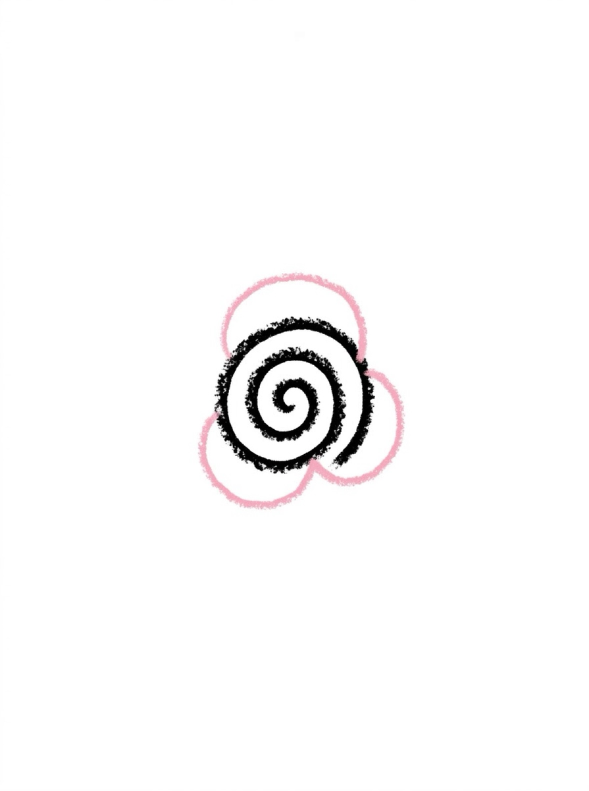
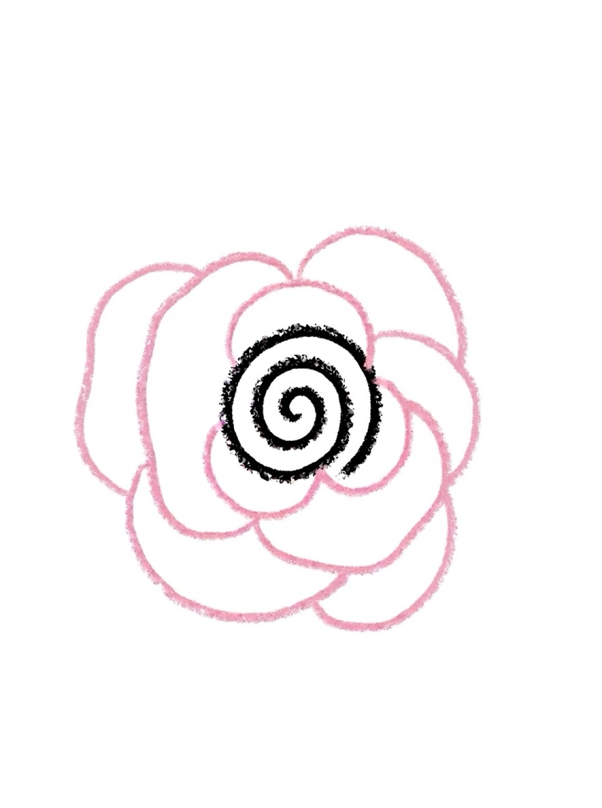
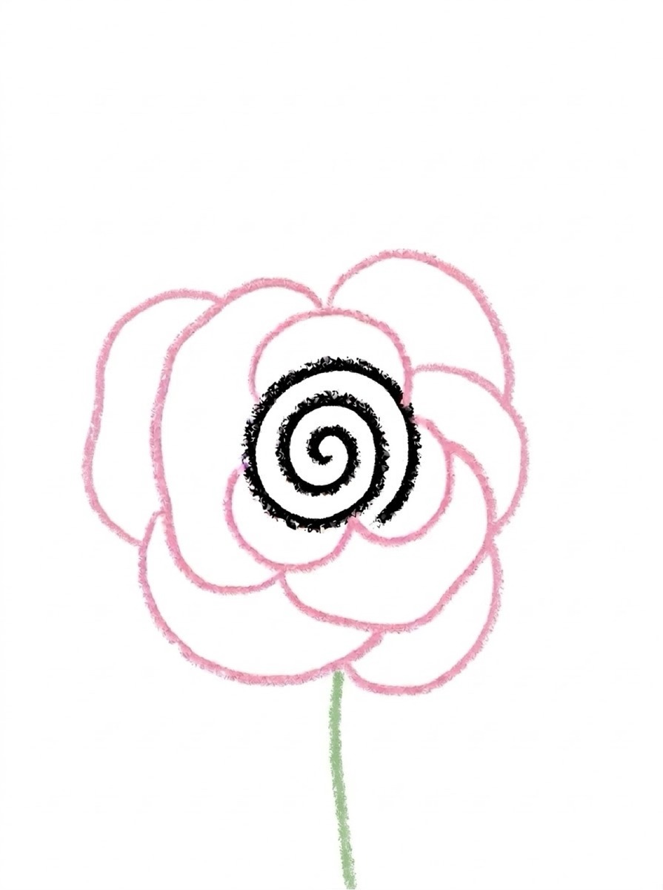
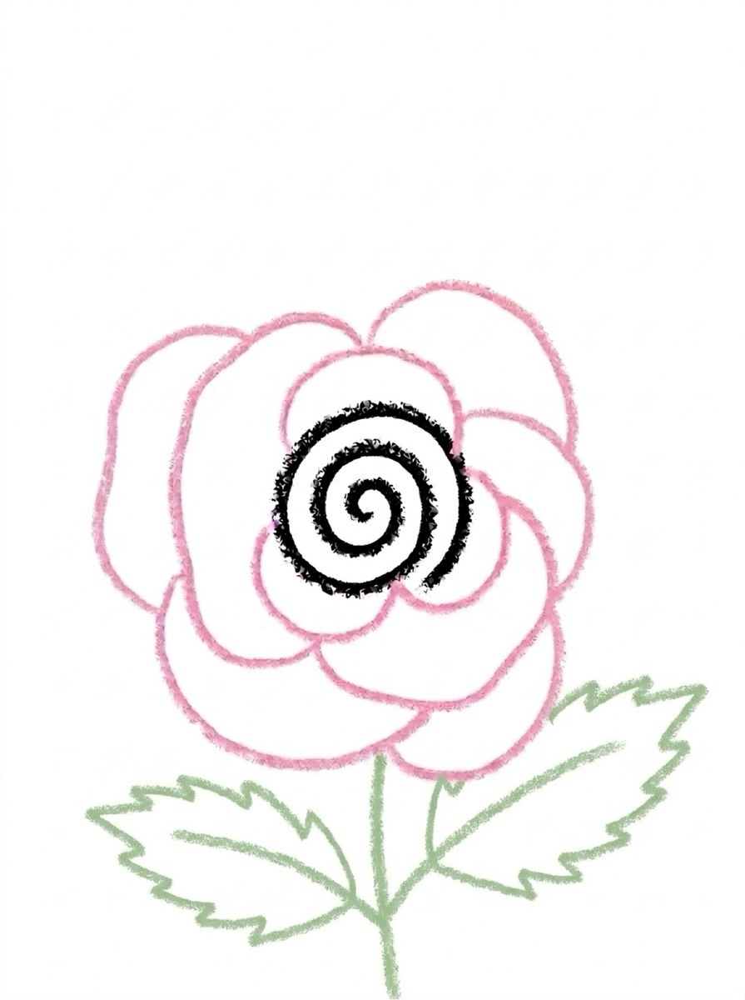

How to Draw a Rose 6 Easy Steps for Kids
Quick Answer
This free step-by-step tutorial shows kids how to draw a rose in six easy steps: a spiral center, inner petals, outer petals, a stem, leaves, and finishing details. Download the printable PDF, grab crayons, and follow along together. Made for ages 5 and up — no signup needed, just print and draw.
At a Glance
- Subject: How to draw a rose
- Ages: 5+
- Steps: 6 steps
- Time: ~15 min
- Difficulty: Easy-Medium
- Supplies: Paper, crayons
Roses look fancy, but the secret is one squiggly spiral. Once kids nail that swirl in the middle, the petals practically draw themselves around it. This is the drawing that gets taped to grandma's fridge.
✏️ How to Draw a Rose: Step by Step
One step per box — draw each new part in a different color so kids can see exactly what changed.
Step 1: Step 1: The Spiral
Draw a small spiral in the middle of your paper, like a tiny snail shell. This is the rose's curled-up center.
Step 2: Step 2: Inner Petals

Draw 3 small rounded petal shapes hugging close around the spiral.
Step 3: Step 3: Outer Petals

Draw 6 bigger petals around those, opening outward like the rose is blooming.
Step 4: Step 4: The Stem

Draw a straight-ish line going down from the flower for the stem.
Step 5: Step 5: The Leaves

Add two jagged-edge leaves on the stem — roses have pointy little teeth on their leaves.
Step 6: Step 6: Details and Color

Add a few small thorns on the stem, then color it in — red or pink petals, green stem and leaves.
📊 Rose Drawing by Age
Every age can join in — just adjust the job.
| Age | What they can do | Tip |
|---|---|---|
| 3–4 | Trace the spiral and color a finished rose | Draw the spiral for them — it's the hardest part at this age |
| 4–5 | Draw the spiral and petals with help | Wobbly petals still look like a rose — reassure them |
| 6+ | Draw the whole rose solo | Challenge: draw three roses at different bloom stages |
🖨️ Download Your Free Rose Drawing Printable
The printable lays out all 6 steps one per box, big enough for little hands — kids draw right alongside each step.
⬇️ Open Free Printable 🖨️ Print🎁 Free printable for ages 3+
🌹 Rose Garden Countdown
Draw one rose a day for five days and line them up in bloom order — bud, half-open, full bloom. Kids see their own progress across the week, and the 'garden' growing on the wall is its own reward. Try a different petal color each day.
What You'll Need to Draw a Rose
Grab a black crayon for the spiral and petal outlines, plus pink or red for the petals and green for the stem and leaves. The spiral center is the trickiest part — a slightly thicker crayon makes it easier for small hands to control. White paper shows the pink best; avoid colored paper here since the petals need contrast.
What They're Learning
This rose starts from a spiral — a shape most kids haven't drawn before, which stretches their comfort zone in a good way. Layering petals from small to large teaches size relationships, and the jagged leaf edges are great for practicing controlled zigzag lines. The stem also introduces the idea of connecting separate parts into one picture.
Make It Yours
Once the basic rose is done, try a whole bouquet — draw three roses at different heights with different petal colors. Kids can also add a vase under the stem, or turn it into a Mother's Day card by drawing a heart next to the bloom. For a fun twist, try an all-blue ‘frost rose’ using cool colors only.
❓ Rose Drawing FAQs
What is the easiest way for a kid to draw a rose?
Start with a small spiral for the center, then draw small petals hugging it and bigger petals opening outward. Add a stem, two jagged leaves, and a few thorns. The spiral does the hard work — everything else is just rounded shapes around it.
What age can kids start learning to draw a rose?
The spiral is tricky, so most kids are ready around age 5 with a little help, and draw one solo by 6 or 7. Younger kids can trace the spiral on the printable and color the petals.
What supplies do we need to draw a rose?
Paper plus red, pink, and green crayons or markers. The free printable PDF lays out all six steps one per box so kids can draw right alongside each step.
Is the rose drawing printable really free?
Yes — every printable on MomYouNeedThis is 100% free to download and print. No signup, no payment, just tap the download button.
How do I print the rose drawing tutorial?
Open the PDF and print at 100% scale (not 'fit to page') so the drawing boxes stay big enough for little hands. The printable is designed to stay large — never shrunk to force a fit.
📚 Keep Exploring
More free drawing tutorials and coloring pages made for little hands and busy parents.
✏️ All 22 Drawing Tutorials